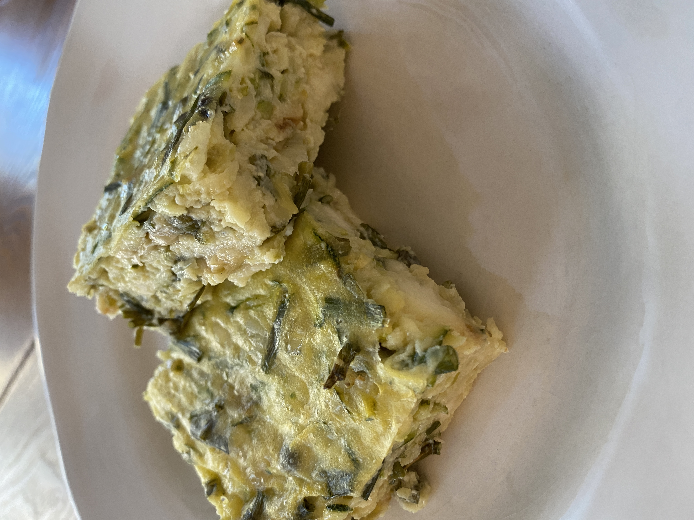

Crustless egg pie with stuffing, usually spinache.
- 1 tablespoon vegetable oil
- 1 medium onion, chopped
- 1 (10 ounce) package frozen chopped spinach - thawed, drained, and squeezed dry
- 5 large eggs, beaten
- ¼ teaspoon salt
- ⅛ teaspoon ground black pepper
- 3 cups shredded cheese
- Preheat oven to 350 degrees F (175 degrees C).
- Lightly grease a 9-inch pie pan.
- Heat oil in a large skillet over medium-high heat. Add onions
and cook, stirring occasionally, until soft, about 3 minutes.
- Stir in spinach and continue to cook until excess moisture has evaporated.
- Whisk together eggs, salt, and pepper in a large bowl.
- Add cheese and spinach mixture and stir until well blended.
- Pour into the prepared pan.
- Bake in the preheated oven until eggs have set, about 30 minutes.
- Remove from the oven and let cool for 10 minutes before serving.